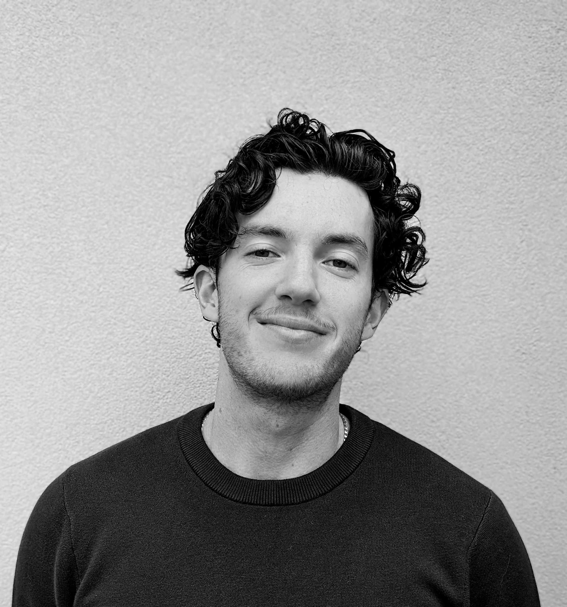

With a keen interest in the world of technology, I am a looking to develop my knowledge in web development and software engineering to ready myself for a career in this space.
My role here is primarily to bartend and provide exceptional customer service. When required, I do stocktake and assist with the floor in any capacity required.
Search, assess, and interview talent for a wide range of roles in the creative space. I would build and manage relationships with both clients and talent across numerous industries, building trust and ensuring that all parties were happy. In my first year, I met and exceeded all targets. and consistently brought in new clients, which would continue every quarter until I left.
I navigated snowcats and snowmobiles to transport goods across the mountain, showcasing proficiency in operating specialized snow vehicles. I collaborated with medics to assist in the safe transport of injured patients across the mountain terrain, and assisted in any first aid duties required. Beyond transportation duties, I also engaged in general labour tasks, such as snow removal and maintaining pathways, showing my adaptability and versatility in addressing diverse challenges across various contexts